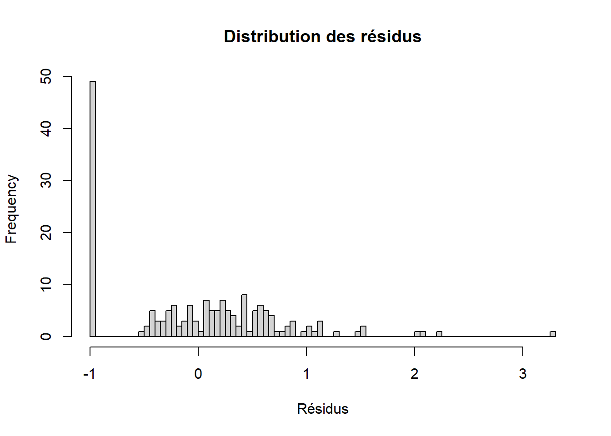

5 Evaluation de l’estimation
5.1 La distribution des résidus
hist(reg$residuals, main = "Distribution des résidus", xlab = "Résidus", breaks = 100)
Nous n’avons pas une hypothèse particulière sur la distribution ds résidus pour l’évaluer. Mais à première vue cette distribution ne suit pas une loi normale.
5.1.1 Root Mean Square Percent Error (RMSPE)
Nous pouvons calculer un indicateur pour estimer la fiabilité de la prévision. Cet indicateur est le Root Mean Square Percent Error, c’est l’erreur de pourcentage quadratique moyen. Il permet de calculer le pourcentage moyen de déviation entre la valeur observée et la valeur prédite.
RMSPE <- function(y, y_hat) {
N <- length(y)
yi_y_hat <- ((y - y_hat)/y)^2
y2 <- ifelse(yi_y_hat == Inf, 0, yi_y_hat)
sum((1/N)*y2)
}
RMSPE(DB$y, reg$fitted.values)[1] 0.114778En moyenne, la valeur prédite dévie de la valeur observée de 11.5 %.
5.1.2 Matrice de confusion
Bien que le RMSPE permette d’estimer la déviation moyenne entre la valeur prédite et la valeur observée, nous remarquons que cet indicateur est utilisée pour des variables continues alors que manifestement une régression de Poisson concerne des valeurs discrètes. Nous pouvons donc calculer une matrice de confusion pour nous rendre compte de la performance du modèle.
En apprentissage automatique supervisé, la matrice de confusion est une matrice qui mesure la qualité d’un système de classification. Chaque ligne correspond à une classe réelle, chaque colonne correspond à une classe estimée.
table(DB$y, round(reg$fitted.values))
0 1 2 3 4 5
0 21 28 0 0 0 0
1 3 51 11 0 0 0
2 1 23 15 3 0 0
3 0 3 9 3 2 1
4 0 0 0 0 1 0